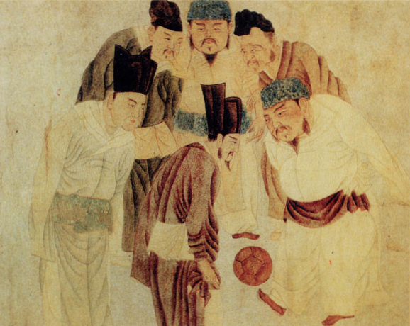
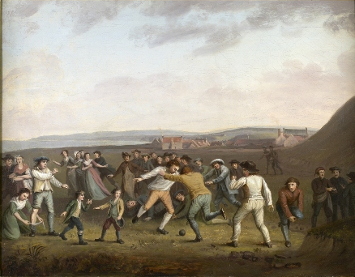

Futbols ir sens sporta vieds.
Līdzīgi sporta veidi futbolam saskatāmi līdz pat senajai Ķīnai 2. un 3. gadsimtā p.m.ē. kur tika spēlēts sporta vieds vārdā "cudžu" (redzams foto).
Dažādi futbola veidi tika spēlēti viduslaiku Eiropā, taču noteikumi ļoti atšķīrās tajos periodos un vietās.
Mūsdienu futbola noteikumi parādījās 19. gadsimta vidū kā pūliņi standartizēt futbola dažādos veidus, kurus spēlēja Anglijas skolās.
Kembridžas noteikumi, pirmoreiz izmantoti Kembridžas Universitātē 1848. gadā, īpaši ietekmēja nākamo noteikumu attīstību, ieskaitot futbolu. Kembridžas noteikumus uzrakstīja Trīsvienības koledžā, Kembridžā pavaldības sanāksmē tās pārstāvji no Etonas, Herovas, Ragbijas, Vinčesteras un Šrūsberijas skolām. Tie netika vispārēji pieņemti. 1850. gadu laikā daudzi klubi, kuri nesaistījās ar skolām vai universitātēm, veidojās visā angliski runājošajā pasaulē, lai spēlētu dažādus futbola veidus. Daži nāca klajā ar saviem atšķirīgajiem noteikumiem, jo īpaši Šefīldas futbola klubs, kuru izveidoja bijušie privātskolas skolnieki 1857. gadā, kura rezultātā veidojās Šefīldas FA 1867. gadā. 1862. gadā Džons Čārlzs Trings no Apingemas skolas arī izdomāja ietekmīgu daudzumu noteikumu.
Visi šie centieni veicināja Futbola Asociācijas (FA) izveidi, kura tika nodibināta 1863. gada 26. oktobra rītā, kad Brīvmūrnieku krodziņā Lielajā Karalienes ielā, Londonā sapulcējās vairāku klubu pārstāvji. Vienīgā skola, kas tika pārstāvēta, šajā gadījumā bija Čārterhausas skola. Brīvmūrnieku krodziņš bija tikšanās vieta vēl piecām sanāksmēm starp oktobri un decembri, kuras galu galā izveidoja pirmo visaptverošu noteikumu kopumu. Pēdējā sanāksmē pirmais FA mantzinis, komisijas pārstāvis no Blekhītas, atsauca savu klubu no FA dēļ divu projekta noteikumu aizvākšanas iepriekšējās sanāksmēs, pirmais, kas ļāva skriet ar bumbu rokā, un otrais, traucēt skrējienu ar spērienu pa kājas lielu (sišana pretiniekam pa apakšstilbu), paklupināšana un turēšana. Citi angļu regbija futbola klubi sekoja šim piemēram un nepievienojās FA, vai pēc tam atstāja FA un tā vietā 1871. gadā izveidoja Regbija Futbola savienību. Vienpadsmit atlikušie klubi Ebenezera Koba Morleija uzraudzībā mēģināja ratificēt oriģinālos trīspadsmit spēles noteikumus. Šie noteikumi iekļāva bumbu apstrādes ar "zīmēm" un vārtu pārlikņa neesamības noteikumus, kas padarīja tos ļoti līdzīgus Viktorijas futbola noteikumiem, kuri tika izstrādāti tajā laikā Austrālijā. Šefīldas FA spēlēja pēc saviem noteikumiem līdz 1870. gadiem, kad FA absorbēja dažus no tās noteikumiem, kamēr tur bija maza starpība starp spēlēm.
Spēles likumus pašlaik nosaka Starptautiskā Futbola asociācijas valde (IFAB). Tā tika izveidota 1886. gadā pēc Futbola Asociācijas, Skotijas Futbola asociācijas, Velsas Futbola asociācijas un Īrijas Futbola asociācijas sanāksmes Mančestrā. Pasaules vecākās futbola sacensības ir FA kausa izcīņa, ko izveidoja Č. V. Alkoks un tajā ir sacentušās angļu komandas kopš 1872. gada. Pirmā oficiālā starptautiskā futbola spēle notika 1872. gadā starp Skotiju un Angliju Glāzgovā, atkal Č. V. Alkoka dēļ. Anglija ir mājvieta pasaulē pirmajai futbola līgai, kuru 1888. gadā Birmingemā dibināja Birmingemas "Aston Villa" direktors Viljams Makgregors. Oriģinālais formāts ietvēra 12 klubus no Anglijas vidienes un Ziemeļanglijas. Fédération Internationale de Football Association (FIFA), starptautiskā futbola organizācija, tika izveidota Parīzē 1904. gadā un paziņoja, ka tie ievēros Futbola Asociācijas spēles likumus. Starptautisko spēļu pieaugušā popularitāte noveda pie FIFA pārstāvju uzņemšanas Starptautiskajā Futbola asociācijas valdē 1913. gadā. Valde pašlaik sastāv no četriem FIFA pārstāvjiem un viena pārstāvja no katras no četrām britu asociācijām.
Mūsdienās futbolu profesionālā līmenī spēlē visā pasaulē. Miljoniem cilvēku regulāri dodas uz stadioniem, lai sekotu līdzi savas iecienītākās komandas spēlēm, ko vēl vairāki dara, vērojot spēles televīzijā. Ļoti daudz cilvēku nodarbojas ar futbolu arī amatierlīmenī. Saskaņā ar pētījumu, ko FIFA publicējusi 2001. gadā, vairāk nekā 240 miljoni cilvēku regulāri spēlē futbolu vairāk nekā 200 valstīs visā pasaulē. Tā vienkāršie noteikumi un minimālās papildpiederumu prasības bez šaubām palielina futbola izplatību un popularitāti.
Daudzās pasaules vietās futbols liek atdzimt kaislībām, un tam ir nozīmīga loma fanu, vietējo kopienu un pat nāciju dzīvēs; turklāt tas tiek bieži dēvēts par vispopulārāko sporta veidu pasaulē. ESPN izplatīja apgalvojumus par to, ka Kotdivuāras futbola izlase palīdzēja nodrošināt pamieru valsts pilsoņu karam 2005. gadā. Savukārt, futbols tiek plaši uzskatīts par galīgo tiešo izraisītāju futbola karam 1969. gadā jūnijā starp Salvadoru un Hondurasu. Sporta veids arī saasināja spriedzi Dienvidslāvijas karu sākumā 1990. gados, kad mačs starp Zagrebas "Dinamo" un Belgradas "Red Star" pārvērtās nemieros 1990. gada martā.
Avots: https://lv.wikipedia.org/wiki/Futbols